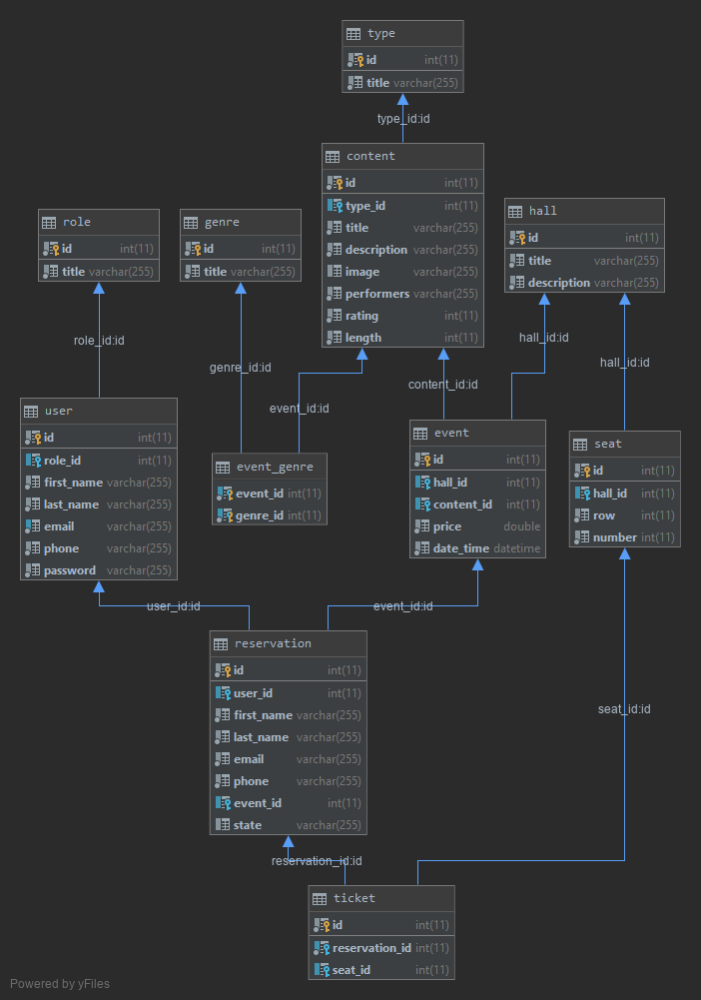

1. Kino: rezervace vstupenek na kulturní události
- Autoři
-
xsedla1e@stud.fit.vutbr.cz -
implementace, konfigurace serveru, výběr technologií
-
xsadil07@stud.fit.vutbr.cz -
implementace, vytváření css, dekompozice
-
xhomol21@stud.fit.vutbr.cz -
implementace, databáze, dokumentace
- URL aplikace
- Kino U tří kamarádů(http://167.172.184.213)
Uživatelé systému pro testování
| Login | Heslo | Role |
| admin@cinema.cz | admin | Administrátor |
| redaktor@cinema.cz | redaktor | Redaktor |
| pokladni@cinema.cz | pokladni | Pokladní |
| divak@cinema.cz | divak | Divák |
Use-case by měl být přesně, tak jak je definováno v zadání.
Implementace
Jako architekturu návrhu jsme se rozhodli použít Model-View-Controller. Každá z těchto komponent je navržena tak, aby zvládla specifické aspekty vývoje aplikace. Složka app obsahuje jednotlivé moduly rozdělené do vlastních souborů, kde je řešena jejich implementace a logika. Jedná se o soubory config, Module a Presenters. Config obsahuje hlavní konfigureci celého projektu. Module se skládá z několika podsloužek, kde každá z nich je zaměřena na učitou část programu, např. Reservation rezervuje a ukládá do systému místa v sálu, s tím může dále pracovat pokladní a její nadřízení. Rezervace se dá ukládat, mazat, editovat. Presenters obsahuje ve výchozí struktuře třídy prezentérů, u nás je v něm pouze chybový prezentér. Složka vendor je automaticky vygenerovaná a obsahuje externí balíčky a knihovny. Složka WWW je výchozí rozhraní přístupné zvenčí. Obsahuje css složku se styly pro jednotlivé stránky a img složku s obrázky, kořenový soubor projektu index.php a .htaccess, který umožňuje upravit některé vlastnosti serveru, aniž by to musel upravit správce serveru. Složka temp uchovává dočasné soubory např. cache. Složka log obsahuje logy, errorové logy. Skrze složku console lze nastavit dodatečné ovládání projektu přes konzoli, ale v programu není třeba. Jako vhodné omezení pro rezervaci, jsme se rozhodli povolit rezervaci maximálně 5 sedadel. V projektu jsme použili obrázky, ale kvůli omezení velikosti odevzdávaného archivu jsou pouze na referenčním serveru.
Databáze
ERD databáze:

USE CASE:

Instalace
- softwarové požadavky
- PHP 7.3 (včetně modulu pro Apache, MySQL)
- MySQL server 5.7
- Apache 2.4 (včetně modulu pro PHP)
- Composer (Dependency Manager for PHP)
- postup instalace na server,
- composer install
- vytvořit složky temp a log
- v MySQL zadat
CREATE database cinema;
use cinema;
CREATE USER cinema@localhost IDENTIFIED BY 'cinema';
GRANT ALL PRIVILEGES ON cinema.* TO cinema@localhost;
- použít příkaz na vytvoření databáze v kořenovém adresáři:
console/index.php orm:schema-tool:create
případně:
console/index.php orm:schema-tool:update --force
- pro ukázku vložit záznamy:
INSERT INTO cinema.role (id, title) VALUES (1, 'Admin');
INSERT INTO cinema.role (id, title) VALUES (2, 'Redaktor');
INSERT INTO cinema.role (id, title) VALUES (3, 'Pokladní');
INSERT INTO cinema.role (id, title) VALUES (4, 'Divák');
INSERT INTO cinema.type (title) VALUES ('Film');
INSERT INTO cinema.type (title) VALUES ('Divadlo');
INSERT INTO cinema.type (title) VALUES ('Přednáška');
INSERT INTO cinema.genre (title) VALUES ('Komedie');
INSERT INTO cinema.genre (title) VALUES ('Drama');
INSERT INTO cinema.genre (title) VALUES ('Historie');
INSERT INTO cinema.genre (title) VALUES ('Životopisný');
INSERT INTO cinema.genre (title) VALUES ('Thriller');
INSERT INTO cinema.genre (title) VALUES ('Horor');
INSERT INTO cinema.genre (title) VALUES ('Akční');
INSERT INTO cinema.genre (title) VALUES ('Dobrodružný');
INSERT INTO cinema.genre (title) VALUES ('Detektivní');
INSERT INTO cinema.genre (title) VALUES ('Kriminální');
INSERT INTO cinema.genre (title) VALUES ('Hudební');
INSERT INTO cinema.genre (title) VALUES ('Katastrofický');
INSERT INTO cinema.genre (title) VALUES ('Postapokaliptický');
INSERT INTO cinema.genre (title) VALUES ('Sci-fi');
INSERT INTO cinema.genre (title) VALUES ('Rodinný');
INSERT INTO cinema.genre (title) VALUES ('Dětský');
INSERT INTO cinema.genre (title) VALUES ('Pohádka');
INSERT INTO cinema.genre (title) VALUES ('Fantasy');
INSERT INTO cinema.genre (title) VALUES ('Adaptace');
INSERT INTO cinema.genre (title) VALUES ('Hrdinové');
INSERT INTO cinema.genre (title) VALUES ('Technologie');
INSERT INTO cinema.genre (title) VALUES ('Filosofie');
INSERT INTO cinema.genre (title) VALUES ('Western');
INSERT INTO cinema.genre (title) VALUES ('Parodie');
INSERT INTO cinema.genre (title) VALUES ('Milostný');
INSERT INTO cinema.genre (title) VALUES ('Dokumentární');
INSERT INTO cinema.genre (title) VALUES ('Animovaný');
INSERT INTO cinema.genre (title) VALUES ('Sportovní');
INSERT INTO cinema.genre (title) VALUES ('Tragédie');
- na vygenerovaní je možné použít script v kořenovém adresáři projektu jako sudo
altCreateDB.sh
- jelikož heslo uživatelů je hashované, nelze vložit do databáze a je třeba uřivateleregistrovat manuálně dle parametrů výše uvedené tabulky a poté jim nastavit roli v databázi příkazem
UPDATE user SET role_id = x WHERE email = 'y' kde x je ID role a y je email uživatele
- alternativně lze výchozím uživatelům změnit roli připraveným scriptem jako sudo
altSetRoles.sh
- nastavit soubor
/etc/php/7.3/apache2/ini.php a v souboru odkomentovat extension=mysqli a extension=pdo_mysql
- Pro nasazení na server jsme editovali následující soubory:
/etc/apache2/sites-enabled/000-default.conf

/etc/apache2/sites-available/000-default.conf
/etc/apache2/sites-available/default-ssl.conf
/var/www/html/cinema/www/.htaccess
/etc/apache2/apache2.conf
a použili příkaz a2enmod rewrite
Známé problémy
Žádné problémy nebyly objeveny. V případě jakéhokoliv dotazu neváhejte poslat dotaz na jeden z uvedených emailů.